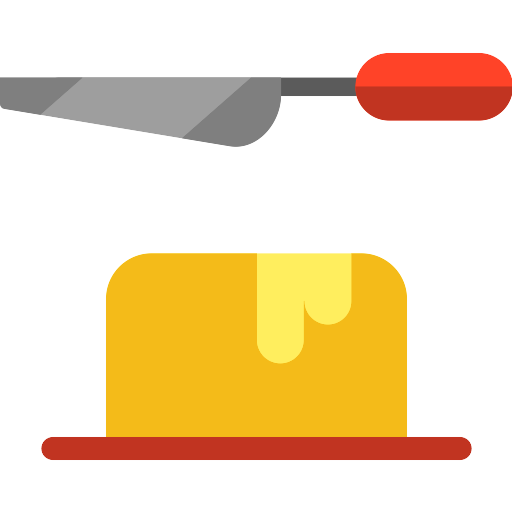

Calories
 (click for more info)
(click for more info)
(click for more info)
Cut Calories
{{activeUser.necessities.caloriesExtremeLoss.toFixed(2)}}
calories
Loss Calories
{{activeUser.necessities.caloriesLoss.toFixed(2)}}
calories
Maintain Calories
{{activeUser.necessities.caloriesMaintain.toFixed(2)}}
calories
Gain Calories
{{activeUser.necessities.caloriesGain.toFixed(2)}}
calories
Bulk Calories
{{activeUser.necessities.caloriesExtremeGain.toFixed(2)}}
calories
Clarification for weight loss/gain: 0.25kg per week means +- 250 calories added on a standard diet. So, the Mid-Weight loss will lose you 0.25kg per week (-250 kcal), Weight loss 0.5kg (-500 kcal) and Extreme -1kg (-1000 kcal). The opposite goes for weight gain
This Calorie Calculator is based on several equations, and the results of the calculator are based on an estimated average. The Harris-Benedict Equation was one of the earliest equations used to calculate basal metabolic rate (BMR), which is the amount of energy expended per day at rest. It was revised in 1984 to be more accurate and was used up until 1990, when the Mifflin-St Jeor Equation was introduced.
The Mifflin-St Jeor Equation also calculates BMR, and has been shown to be more accurate than the revised Harris-Benedict Equation. The Katch-McArdle Formula is slightly different in that it calculates resting daily energy expenditure (RDEE), which takes lean body mass into account, something that neither the Mifflin-St Jeor nor the Harris-Benedict Equation do. Of these equations, the Mifflin-St Jeor Equation is considered the most accurate equation for calculating BMR with the exception that the Katch-McArdle Formula can be more accurate for people who are leaner and know their body fat percentage. The three equations used by the calculator are listed below:
Mifflin-St Jeor Equation:
For men: BMR = 10W + 6.25H - 5A + 5
For women: BMR = 10W + 6.25H - 5A - 161
Revised Harris-Benedict Equation:
For men: BMR = 13.397W + 4.799H - 5.677A + 88.362
For women: BMR = 9.247W + 3.098H - 4.330A + 447.593
The value obtained from these equations is the estimated number of calories a person can consume in a day to maintain their body-weight, assuming they remain at rest. This value is multiplied by an activity factor (generally 1.2-1.95), dependent on a person's typical levels of exercise, in order to obtain a more realistic value for maintaining body-weight (since people are less likely to be at rest throughout the course of an entire day). 1 pound, or approximately 0.45 kg, equates to about 3,500 calories. As such, in order to lose 1 pound per week, it is recommended that 500 calories be shaved off the estimate of calories necessary for weight maintenance per day. For example, if a person has an estimated allotment of 2,500 calories per day to maintain body-weight, consuming 2,000 calories per day for one week would theoretically result in 3,500 calories (or 1 pound) lost during the period.
It is important to remember that proper diet and exercise is largely accepted as the best way to lose weight. It is inadvisable to lower calorie intake by more than 1,000 calories per day, as losing more than 2 pounds per week can be unhealthy, and can result in the opposite effect in the near future by reducing metabolism. Losing more than 2 pounds a week will likely involve muscle loss, which in turn lowers BMR, since more muscle mass results in higher BMR. Excessive weight loss can also be due to dehydration, which is unhealthy.
Furthermore, particularly when exercising in conjunction with dieting, maintaining a good diet is important, since the body needs to be able to support its metabolic processes and replenish itself. Depriving the body of the nutrients it requires as part of heavily unhealthy diets can have serious detrimental effects, and weight lost in this manner has been shown in some studies to be unsustainable, since the weight is often regained in the form of fat (putting the participant in a worse state than when beginning the diet). As such, in addition to monitoring calorie intake, it is important to maintain levels of fiber intake as well as other nutritional necessities to balance the needs of the body.
Calorie counting with the intent of losing weight, on its simplest levels, can be broken down into a few general steps:
Determine your BMR using one of the provided equations. If you know your body fat percentage, the Katch-McArdle Formula might be a more accurate representation of your BMR. Remember that the values attained from these equations are approximations and subtracting exactly 500 calories from your BMR will not necessarily result in exactly 1 pound lost per week – it could be less, or it could be more!
Determine your weight loss goals. Recall that 1 pound (~0.45 kg) equates to approximately 3500 calories, and reducing daily caloric intake relative to estimated BMR by 500 calories per day will theoretically result in a loss of 1 pound a week. It is generally not advisable to lose more than 2 pounds per week as it can have negative health effects, i.e. try to target a maximum daily calorie reduction of approximately 1000 calories per day. Consulting your doctor and/or a registered dietician nutritionist (RDN) is recommended in cases where you plan to lose more than 2 pounds per week.
Choose a method to track your calories and progress towards your goals. If you have a smartphone, there are many easy-to-use applications that facilitate tracking calories, exercise, and progress, among other things. Many, if not all of these, have estimates for the calories in many brand-name foods or dishes at restaurants, and if not, they can estimate calories based on the amount of the individual components of the foods. It can be difficult to get a good grasp on food proportions and the calories they contain – which is why counting calories (as well as any other approach) is not for everyone – but if you meticulously measure and track the number of calories in some of your typical meals, it quickly becomes easier to accurately estimate calorie content without having to actually measure or weigh your food each time. There are also websites that can help to do the same, but if you prefer, manually maintaining an excel spreadsheet or even a pen and paper journal are certainly viable alternatives.
Track your progress over time and make changes to better achieve your goals if necessary. Remember that weight loss alone is not the sole determinant of health and fitness, and you should take other factors such as fat vs. muscle loss/gain into account as well. Also, it is recommended that measurements are taken over longer periods of time such as a week (rather than daily) as significant variations in weight can occur simply based on water intake or time of day. It is also ideal to take measurements under consistent conditions, such as weighing yourself as soon as you wake up and before breakfast, rather than at different times throughout the day.
Keep it up!
Proteins
(click for more info)
Maintain Proteins
{{activeUser.necessities.proteinsMaintain.toFixed(2)}}
grams
Gain Proteins
{{activeUser.necessities.proteinsGainMin.toFixed(2)}}
grams
Extra Proteins
{{activeUser.necessities.proteinsGainMax.toFixed(2)}}
grams
It's important to eat enough protein each day to cover your body's needs. Protein helps your body maintain a proper fluid balance, builds and repairs tissues, transports nutrients, and provides other essential functions.
Protein helps to maintain body tissues, including muscles, organs, the nervous system, blood, skin, and hair. It also serves as a transport mechanism for oxygen, fats, vitamins, and minerals. In addition, eating protein can help you manage your weight because it takes longer to digest a protein-rich meal. After consuming a meal with protein, you're likely to feel full and satisfied longer.
Deficiency
Unlike fat and glucose, our body has little capacity to store protein. If you were to stop eating protein, your body would start to break down muscle. Protein deficiency is rare in developed countries. However, it can happen if you're not eating enough food every day.
Overconsumption
On the flip side, it is possible to eat too much protein. Some people believe that excess protein is excreted in the urine. However, only part of the protein is excreted. Another part of the protein is converted to glucose for energy or stored as fat. So if you eat too much protein—and too many calories as a result—you run the risk of gaining weight from excess calories. If your calorie goal stays on track but you get more protein than you need, you are probably not getting enough carbohydrates or fat for your body to function properly. The key to proper nutrition is achieving the proper balance of macronutrients. Eating large amounts of protein can lead to dehydration, even in elite athletes. So if you follow a high protein diet, it’s important to drink extra water.
Carbs
(click for more info)
Low Carbs
{{activeUser.necessities.carbsLow.toFixed(2)}}
grams
High Carbs
{{activeUser.necessities.carbsHigh.toFixed(2)}}
grams
Low carbohydrate diets can be very effective for weight loss, according to research. Reducing carbs tends to reduce your appetite and cause automatic weight loss, or weight loss without the need to count calories.
For some people, a low carb diet allows them to eat until fullness, feel satisfied, and still lose weight. The number of carbs a person should eat every day for weight loss varies depending on their age, sex, body type, and activity levels.
The Dietary Guidelines for Americans recommends that carbs provide 45–65% of your daily calorie intake for all age groups and sexes. According to the Food and Drug Administration (FDA), the Daily Value (DV) for carbs is 300 grams per day when eating a 2,000-calorie diet (2).
Some people reduce their daily carb intake with the aim of losing weight, cutting down to around 50–150 grams per day. Research has shown that low carb diets can be part of an effective weight loss strategy. This diet restricts your intake of carbohydrates — including sugars and starches like bread and pasta — and replaces them with protein, healthy fats, and vegetables.
Studies show that low carb diets can reduce a person’s appetite, lead to them eating fewer calories, and help them to lose weight more easily than in other diets, provided they maintain the diet (3Trusted Source). In studies comparing low carb and low fat diets, researchers need to actively restrict calories in the low fat groups to make the results comparable, but the low carb groups are still usually more effective (4, 5Trusted Source).
Low carb diets also have benefits that go beyond just weight loss. They can help to lower blood sugar, blood pressure, and triglycerides. They can also help to raise HDL (good) cholesterol and improve the pattern of LDL (bad) cholesterol (6Trusted Source, 7Trusted Source). Low carb diets often cause more weight loss and improve health when compared to calorie-restricted, low fat diets that many people still recommend. There’s plenty of evidence to support this idea
Fats

(click for more info)
Fats for Cut
{{activeUser.necessities.fatsLoss.toFixed(2)}}
grams
Maintain Fats
{{activeUser.necessities.fatsMaintain.toFixed(2)}}
grams
Fats for Bulk
{{activeUser.necessities.fatsGain.toFixed(2)}}
grams
Why is fat important?
A macronutrient is something we need in relatively large amounts to be healthy. Macronutrients include water, proteins, carbohydrates, and fats. Fat is associated with being harmful, but the truth is humans need fat as:
-A source of energy
-A source of essential fatty acids that our bodies cannot make
-A component of cell walls
-A way to absorb fat-soluble vitamins: A, D, E, and K
-A way to insulate our bodies and protect organs
Fat tends to be considered “bad” because it is associated with weight gain and high cholesterol. However, certain types of fat give protective benefits to the heart if appropriate portions are consumed. The key is to understand how to choose the right amount of each type of fat, so we should look closely at the ideas of total fat and each type of fat.
The dietary reference intake (DRI) for fat in adults is 20% to 35% of total calories from fat. That is about 44 grams to 77 grams of fat per day if you eat 2,000 calories a day. It is recommended to eat more of some types of fats because they provide health benefits. It is recommended to eat less of other types of fat due to the negative impact on health.
-Monounsaturated fat: 15% to 20%
-Polyunsaturated fat: 5% to 10%
-Saturated fat: less than 10%
-Trans fat: 0%
-Cholesterol: less than 300 mg per day
What is the relationship between fat intake and weight?
Being overweight may increase your risk of developing high blood pressure, diabetes, cardiovascular diseases (diseases of the heart and blood vessels) and certain forms of cancer. Therefore, it is important to lose weight if you are overweight. It is true that a diet high in fat can lead to weight gain. The reason behind this is that a gram of fat has about twice as many calories per gram as carbohydrates and proteins. Losing weight takes more than just eating low-fat foods. You must also watch how many calories you eat and become familiar with appropriate portion sizes.
Cholesterol
(click for more info)
Min Cholesterol
{{activeUser.necessities.cholesterolMin.toFixed(1)}}
miligrams
Max Cholesterol
{{activeUser.necessities.cholesterolMax.toFixed(1)}}
miligrams
Following dietary guidelines, doctors used to recommend that you consume no more than 300 milligrams (mg) of dietary cholesterol per day — 200 mg if you had a high risk of heart disease.
Now, there are no specific recommended limits for the amount of cholesterol you consume from food. But it’s still important to pay attention to the food you eat in order to keep your body’s cholesterol levels in a healthy range.
But problems arise when you eat too many saturated and trans fats. These cause your liver to produce too much LDL (“bad”) cholesterol, which winds up in artery-clogging deposits. For this reason, experts generally recommend avoiding trans fats altogether and limiting saturated fats to 10 percent or lessTrusted Source of your total calorie intake.
For someone eating 2,000 calories a day, that would be 200 calories (22 grams) or less of saturated fats per day. The most recent recommendation by the American Heart Association (AHA) is to further limit saturated fats to only 5 or 6 percent of your total daily calories.
Fiber
(click for more info)
Min Fiber
{{activeUser.necessities.fibersMin.toFixed(1)}}
grams
Max Fiber
{{activeUser.necessities.fibersMax.toFixed(1)}}
grams
According to the American Heart Association, the daily value for fiber is 25 grams per day on a 2,000-calorie diet for adults. This number may also depend on age or sex
As a whole, fiber delivers a lot of health benefits:
-supports weight loss
-reduces cholesterol and blood sugar levels
-lowers risk of cardiovascular diseases such as stroke, heart disease, and more
-prevents diabetes
-increases digestive and bowel health
-fuels healthy gut bacteria
In general, dietary fiber is an umbrella term for the parts of plants and other foods that the body can’t digest. Instead of breaking fiber down, fiber passes through your system and eases symptoms such as constipation. It’s important to eat a wide variety of foods instead of relying on one source for fiber intake.
Symptoms of too much fiber
Fiber is also known as “bulk” or “roughage,” and it can make some noise as it passes through the stomach and intestines. If you eat more than 70 grams a day, your body will begin to tell you to back off. Here are some signs and symptoms:
gas
bloating
constipation
diarrhea
abdominal cramping
There’s one other problem with fiber overload. Fiber can bind to important minerals such as calcium, iron, and zinc and prevent your system from absorbing these nutrients. Cut back on your fiber intake if you experience these symptoms and feel it’s due to your diet, not another condition like the stomach flu that has similar symptoms.
Iron
 (click for more info)
(click for more info)
(click for more info)
Min Iron
{{activeUser.necessities.ironMin.toFixed(1)}}
miligrams
Max Iron
{{activeUser.necessities.ironMax.toFixed(1)}}
miligrams
Iron is a nutrient that plays a vital role in oxygen transport. It binds to hemoglobin, a special protein, and helps it carry red blood cells from your lungs to other tissues in your body
Iron is concentrated in human blood. Because of this, people who receive regular blood transfusions, such as those in cancer therapy, may be at risk for getting too much iron. This condition is known as iron overload. It happens because your body cannot rid itself of its iron stores before being supplied with more from the blood transfusion. While iron is necessary, too much could be toxic and damage your liver, heart, and other vital organs. However, iron overload is not a concern when your iron comes from diet alone — unless you have a condition like hemochromatosis, which causes increased absorption of iron in your digestive tract.Keep in mind that the Tolerable Upper Intake Level (UL) — the highest amount you can safely consume — is 40–45 mg per day for iron, depending on your sex and age
If you’re not getting enough iron, you may feel weak, fatigued, and bruise easily. You may be pale, feel anxious, or have cold hands and feet or brittle nails. You might also experience abnormal cravings, such as a desire to eat soil — a condition known as pica.
Alternately, if you experience joint pain or a change in skin tone, or if you get sick easily, you might be getting too much iron. You are especially at risk if you regularly receive blood transfusions
Calcium
(click for more info)
Min Calcium
{{activeUser.necessities.calciumMin.toFixed(1)}}
miligrams
Max Calcium
{{activeUser.necessities.calciumMax.toFixed(1)}}
miligrams
Calcium has several important functions. These include:
-helping build bones and keep teeth healthy
-regulating muscle contractions, including your heartbeat
-making sure blood clots normally
A lack of calcium could lead to a condition called rickets in children, and osteomalacia or osteoporosis in later life.
How much calcium do I need?
Adults aged 19 to 64 need 700mg of calcium a day.
You should be able to get all the calcium you need from your daily diet.
What happens if I take too much calcium?
Taking high doses of calcium (more than 1,500mg a day) could lead to stomach pain and diarrhoea.
Magnes.
(click for more info)
Min Magnesium
{{activeUser.necessities.magnesiumMin.toFixed(1)}}
miligrams
Max Magnesium
{{activeUser.necessities.magnesiumMax.toFixed(1)}}
miligrams
Magnesium is a mineral that helps: turn the food we eat into energy and make sure the parathyroid glands, which produce hormones important for bone health, work normally
Supplementing with this vital nutrient has been linked to many benefits, including constipation relief and improved blood sugar regulation and sleep.
Possible side effects, concerns and warnings
The National Academy of Medicine recommends not exceeding 350 mg of supplemental magnesium per day. However, several studies have involved higher daily dosages. It’s recommended to only take a daily magnesium supplement that provides more than 350 mg while under medical supervision. Though magnesium toxicity is rare, taking certain magnesium supplements at high doses may cause diarrhea, nausea, and abdominal cramping.Magnesium supplements may also interact with some medications, including antibiotics and diuretics
Phosph.
(click for more info)
Min Phosphorus
{{activeUser.necessities.phosphorusMin.toFixed(1)}}
miligrams
Max Phosphorus
{{activeUser.necessities.phosphorusMax.toFixed(1)}}
miligrams
Phosphorus is the second most plentiful mineral in your body. The first is calcium. Your body needs phosphorus for many functions, such as filtering waste and repairing tissue and cells. Most people get the amount of phosphorus that they need through their daily diets. In fact, it’s more common to have too much phosphorus in your body than too little. Kidney disease or eating too much phosphorus and not enough calcium can lead to an excess of phosphorous.
However, certain health conditions (such as diabetes and alcoholism) or medications (such as some antacids) can cause phosphorus levels in your body to drop too low.Phosphorus levels that are too high or too low can cause medical complications, such as heart disease, joint pain, or fatigue.
You need phosphorus to:
-keep your bones strong and healthy
-help make energy
-move your muscles
In addition, phosphorus helps to:
-build strong teeth
-manage how your body stores and uses energy
-reduce muscle pain after exercise
-filter out waste in your kidneys
-grow, maintain, and repair tissue and cells
-produce DNA and RNA — the body’s genetic building blocks
-balance and use vitamins such as vitamins B and D, as well as other minerals like iodine, magnesium, and zinc
-maintain a regular heartbeat
-facilitate nerve conduction
Symptoms of low phosphorus can include:
-joint or bone pain
-loss of appetite
-irritability or anxiety
-fatigue
-poor bone development in children
Potas.
(click for more info)
Min Potassium
{{activeUser.necessities.potassiumMin.toFixed(1)}}
miligrams
Max Potassium
{{activeUser.necessities.potassiumMax.toFixed(1)}}
miligrams
Potassium is an essential mineral and electrolyte involved in heart function, muscle contraction, and water balance. A high intake may help reduce high blood pressure, salt sensitivity, and the risk of stroke. Additionally, it may protect against osteoporosis and kidney stones. Despite its importance, very few people around the world get enough potassium. A healthy adult should aim to consume 3,500–4,700 mg daily from foods. To increase your intake, incorporate a few potassium-rich foods into your diet such as spinach, yams, avocados, bananas, and fish, such as salmon.
A diet rich in potassium is associated with some impressive health benefits. It may prevent or alleviate a variety of health problems, including:
-High blood pressure. Many studies have shown that potassium-rich diets can lower blood pressure, especially for those with high blood pressure
-Salt sensitivity. People with this condition may experience a 10% increase in blood pressure after eating salt. A potassium-rich diet may eliminate salt sensitivity
-Stroke. Several studies have shown that a potassium-rich diet may reduce the risk of stroke by up to 27%
-Osteoporosis. Studies have shown that a potassium-rich diet may help prevent osteoporosis, a condition associated with an increased risk of bone fractures
-Kidney stones. Studies have found that potassium-rich diets are associated with a significantly lower risk of kidney stones than diets low in this mineral
Sodium
 (click for more info)
(click for more info)
(click for more info)
Min Sodium
{{activeUser.necessities.sodiumMin.toFixed(1)}}
miligrams
Max Sodium
{{activeUser.necessities.sodiumMax.toFixed(1)}}
miligrams
The American Heart Association recommends no more than 2,300 milligrams (mg) a day and moving toward an ideal limit of no more than 1,500 mg per day for most adults.
How can I tell how much sodium I’m eating?
You can find the amount of sodium in your food by looking at the Nutrition Facts label. The amount of sodium per serving is listed in milligrams (or mg). Check the ingredient list for words like “sodium,” “salt” and “soda.” The total sodium shown on the Nutrition Facts label includes the sodium from salt, plus the sodium from any other sodium-containing ingredient in the product. For example, this includes ingredients like sodium nitrate, sodium citrate, monosodium glutamate (MSG) or sodium benzoate.
Is there such a thing as eating too little sodium?
The body needs only a small amount of sodium (less than 300 milligrams per day) to function properly. That’s a mere smidgen — the amount in less than ¼ teaspoon. Very few people come close to eating less than that amount. Plus, healthy kidneys are great at retaining the sodium that your body needs.
Sugar
(click for more info)
Min Sugar
{{activeUser.necessities.sugarsMin.toFixed(1)}}
grams
Max Sugar
{{activeUser.necessities.sugarsMax.toFixed(1)}}
grams
The excess consumption of added sugar is associated with a variety of preventable diseases. It provides calories with no added nutrients and can damage your metabolism in the long run.
It’s very important to make the distinction between added sugars and sugars that occur naturally in foods like fruits and vegetables. These foods contain water, fiber, and various micronutrients. Naturally occurring sugars are absolutely fine, but the same does not apply to added sugar. Added sugar is the main ingredient in candy and abundant in many processed foods, such as soft drinks and baked products. The most common added sugars are regular table sugar (sucrose) and high fructose corn syrup. To optimize your health, do your best to avoid foods that contain added sugars. Even the Dietary Guidelines for Americans recommends limiting calories from added sugars to less than 10 percent of total calories per day (2Trusted Source).
What is a safe amount of sugar to eat per day? Unfortunately, there’s no simple answer to this question. Some people can eat a lot of sugar without harm, while others should avoid it as much as possible. According to the American Heart Association (AHA), the maximum amount of added sugars you should eat in a day are:
Men: 150 calories per day (37.5 grams or 9 teaspoons)
Women: 100 calories per day (25 grams or 6 teaspoons)
To put that into perspective, one 12-ounce (355-mL) can of Coke contains 140 calories from sugar, while a regular-sized Snickers bar contains 120 calories from sugar. In contrast, the US dietary guidelines advise people to limit their intake to less than 10% of their daily calorie intake. For a person eating 2,000 calories per day, this would equal 50 grams of sugar, or about 12.5 teaspoons.
If you’re healthy and active, these are reasonable recommendations. You’ll probably burn off these small amounts of sugar without them causing you any harm. Still, it’s important to note that there’s no need for added sugars in the diet.
Zinc
 (click for more info)
(click for more info)
(click for more info)
Min Zinc
{{activeUser.necessities.zincMin.toFixed(1)}}
miligrams
Max Zinc
{{activeUser.necessities.zincMax.toFixed(1)}}
miligrams
Because your body doesn’t naturally produce zinc, you must obtain it through food or supplements.
Research shows that zinc has numerous health benefits.
-Boosts Your Immune System
-Accelerates Wound Healing
-May Reduce the Risk of Certain Age-Related Diseases
-May Help Treat Acne
-Decreases Inflammation
Deficiency Symptoms
Although severe zinc deficiency is rare, it can occur in people with rare genetic mutations, breastfeeding infants whose mothers don’t have enough zinc, people with alcohol addictions and anyone taking certain immune-suppressing medications.
Vitamins
 (click for more info)
(click for more info)
(click for more info)
Vitamin A
Min
{{activeUser.necessities.AMin.toFixed(1)}}
mcgs
Max
{{activeUser.necessities.AMax.toFixed(1)}}
mcgs
Vitamin B1
Min
{{activeUser.necessities.B1Min.toFixed(1)}}
mgs
Max
{{activeUser.necessities.B1Max.toFixed(1)}}
mgs
Vitamin B2
Min
{{activeUser.necessities.B2Min.toFixed(1)}}
mgs
Max
none
mgs
Vitamin B3
Min
{{activeUser.necessities.B3Min.toFixed(1)}}
mgs
Max
{{activeUser.necessities.B3Max.toFixed(1)}}
mgs
Vitamin B6
Min
{{activeUser.necessities.B6Min.toFixed(1)}}
mgs
Max
{{activeUser.necessities.B6Max.toFixed(1)}}
mgs
Vitamin B9
Min
{{activeUser.necessities.B9Min.toFixed(1)}}
mcgs
Max
{{activeUser.necessities.B9Max.toFixed(1)}}
mcgs
Vitamin B12
Min
{{activeUser.necessities.B12Min.toFixed(1)}}
mcgs
Max
none
mcgs
Vitamin C
Min
{{activeUser.necessities.CMin.toFixed(1)}}
mgs
Max
none
mgs
Vitamin D
Min
{{activeUser.necessities.DMin.toFixed(1)}}
mcgs
Max
{{activeUser.necessities.DMax.toFixed(1)}}
mcgs
Vitamin E
Min
{{activeUser.necessities.EMin.toFixed(1)}}
mgs
Max
{{activeUser.necessities.EMax.toFixed(1)}}
mgs
Vitamin K
Min
{{activeUser.necessities.KMin.toFixed(1)}}
mcgs
Max
{{activeUser.necessities.KMax.toFixed(1)}}
mcgs
Vitamin A
hough vitamin A is often considered a singular nutrient, it’s really the name for a group of fat-soluble compounds, including retinol, retinal and retinyl esters. There are two forms of vitamin A found in food. Preformed vitamin A — retinol and retinyl esters — occurs exclusively in animal products, such as dairy, liver and fish, while provitamin A carotenoids are abundant in plant foods like fruits, vegetables and oils
Vitamin A is an important nutrient that benefits health in many ways:
-Potent Antioxidant
-Essential for Eye Health and Prevents Macular Degeneration
-May Protect Against Certain Cancers
-Vital for Fertility and Fetal Development
-Boosts Your Immune System
Vitamin A deficiency can lead to severe health complications. According to the WHO, vitamin A deficiency is the leading cause of preventable blindness in children worldwide. Vitamin A deficiency also increases the severity and risk of dying from infections like measles and diarrhea. Less severe symptoms of vitamin A deficiency include skin issues like hyperkeratosis and acne
Vitamin C
Vitamin C, also known as ascorbic acid, has several important functions. These include:
-helping to protect cells and keeping them healthy
-maintaining healthy skin, blood vessels, bones and cartilage
-helping with wound healing
-Lack of vitamin C can lead to scurvy.
Taking large amounts (more than 1,000mg per day) of vitamin C can cause:
-stomach pain
-diarrhoea
-flatulence
Vitamin D
Vitamin D is essential for good health. It’s often referred to as the “sunshine vitamin” and is made in your skin when exposed to sunlight. Despite that, vitamin D deficiency is one of the most common nutrient deficiencies in the world.
Significant amounts of vitamin D can also be made in your skin when exposed to UV rays from sunlight. Any excess vitamin D is stored in your body fat for later use. If you have access to strong sun all year, then occasional sun exposure may be enough to fulfill your vitamin D requirements.
The National Institutes of Health (NIH) recommends an average daily intake of 400–800 IU, or 10–20 micrograms and depend on your expsoure. Upper limit of safe consumption is 100 mcg
While incidences of vitamin D toxicity are rare, getting too much can be harmful. It could lead to:
-nausea
-vomiting
-muscle weakness
-confusion
-loss of appetite
-dehydration
-kidney stones
Vitamin E
Vitamin E is a nutrient that performs as an antioxidant in the body. It exists naturally in certain foods and is sometimes added to others.Vitamin E exists in 8 chemical forms. Alpha-tocopherol is the form that best meets the dietary requirements of humans.
-Reduces oxidative stress
-May ease osteoarthritis symptoms
-May help manage diabetes
-Beneficial for your skin
While it’s rare to be deficient in vitamin E, individuals living with cystic fibrosis, Crohn’s disease, or an inability to secrete bile from the liver into the digestive tract may have chronic diarrhea, and as a result, may sometimes require water-soluble forms of vitamin E.
While overdosing on food-based vitamin E is unlikely, the NIH reports that taking high doses of this vitamin in supplement form may cause serious side effects. One serious side effect is an increased risk of hemorrhagic stroke. Another side effect that is being studied is a possible increased risk of prostate cancer.
Vitamin K
Vitamin B1
There are high concentrations of Vitamin B1 in the outer layers and germ of cereals, as well as in yeast, beef, pork, nuts, whole grains, and pulses.Fruit and vegetables that contain it include cauliflower, liver, oranges, eggs, potatoes, asparagus, and kale.
Vitamin B1, or thiamin, helps prevent complications in the nervous system, brain, muscles, heart, stomach, and intestines. It is also involved in the flow of electrolytes into and out of muscle and nerve cells.It helps prevent diseases such as beriberi, which involves disorders of the heart, nerves, and digestive system.
A deficiency of vitamin B1 commonly leads to beriberi, a condition that features problems with the peripheral nerves and wasting.Weight loss and anorexia can develop.
There may be mental problems, including confusion and short-term memory loss.Muscles may become weak, and cardiovascular symptoms can occur, for example, an enlarged heart.
Vitamin B2
Riboflavin is a key component of coenzymes involved with the growth of cells, energy production, and the breakdown of fats, steroids, and medications.
Because riboflavin assists many enzymes with various daily functions throughout the body, a deficiency can lead to health problems. Animal studies show that the brain and heart disorders and some cancers can develop from long-term riboflavin deficiency.
A riboflavin deficiency is very rare in the United States. Disorders of the thyroid can increase the risk of a deficiency. A riboflavin deficiency most often occurs with other nutrient deficiencies, such as in those who are malnourished. Symptoms may include:
-Cracked lips
-Sore throat
-Swelling of the mouth and throat
-Swollen tongue (glossitis)
-Hair loss
-Skin rash
-Anemia
-Itchy red eyes
-Cataracts in severe cases
Vitamin B3
A niacin deficiency is rare in the United States and other industrialized countries because it is well-absorbed from most foods (with the exception of some cereal grains in which niacin is bound to its fibers, decreasing the absorption) and is added to many foods and multivitamins. A severe niacin deficiency leads to pellagra, a condition that causes a dark, sometimes scaly rash to develop on skin areas exposed to sunlight; bright redness of the tongue; and constipation/diarrhea. Other signs of severe niacin deficiency include:
-Depression
-Headache
-Fatigue
-Memory loss
-Hallucinations
Toxicity when eating foods containing niacin is rare, but can occur from long-term use of high-dose supplements. A reddened skin flush with itchiness or tingling on the face, arms, and chest is a common sign. Flushing occurs mainly when taking high-dosage supplements in the form of nicotinic acid, rather than nicotinamide.
-Other signs:
-Dizziness
-Low blood pressure
-Fatigue
-Headache
-Upset stomach
-Nausea
-Blurred vision
-Impaired glucose tolerance and inflammation of liver in severe cases (at very high doses of 3,000-9,000 mg daily for several months/years)
Vitamin B6
Health Benefits of Vitamin B6
May Improve Mood and Reduce Symptoms of Depression
May Promote Brain Health and Reduce Alzheimer’s Risk
May Prevent and Treat Anemia by Aiding Hemoglobin Production
May Be Useful in Treating Symptoms of PMS
May Prevent Clogged Arteries and Reduce Heart Disease Risk
May Promote Eye Health and Prevent Eye Diseases
Potential Side Effects of Too Much Vitamin B6
Vitamin B6 toxicity is not likely to occur from food sources of B6. It would be nearly impossible to consume the amount in supplements from diet alone.Taking more than 1,000 mg of supplemental B6 a day may cause nerve damage and pain or numbness in the hands or feet. Some of these side effects have even been documented after just 100–300 mg of B6 per day
Vitamin B9
A folate deficiency is rare because it is found in a wide range of foods.
Signs of deficiency can include: megaloblastic anemia (a condition arising from a lack of folate in the diet or poor absorption that produces less red blood cells, and larger in size than normal); weakness, fatigue; irregular heartbeat; shortness of breath; difficulty concentrating; hair loss; pale skin; mouth sores.
It is extremely rare to reach a toxic level when eating folate from food sources.
However, an upper limit for folic acid is set at 1,000 mcg daily because studies have shown that taking higher amounts can mask a vitamin B12 deficiency. This deficiency occurs most often in older adults or those eating a vegan diet in whom a B12 deficiency is more common. Both folate and B12 are involved in making red blood cells, and a shortage of either can result in anemia. A person taking high-dosage supplements of folic acid may be able to correct the anemia and feel better, but the B12 deficiency still exists. In this case, if high folate intake continues to “hide” the symptoms of B12 deficiency for a long time, a slow but irreversible damage to the brain and nervous system may occur. If you choose to use a folic acid supplement, stick with the lower range available of 400 mcg a day or less, as you will likely obtain additional folic acid from fortified foods like cereals and breads, as well as natural folate in food.
Vitamin B12
Vitamin B12 is an essential nutrient that plays a critical role in several of your body’s processes.It’s necessary for proper red blood cell production, DNA formation, nerve function, and metabolism
Vitamin B12 is found mostly in animal products, including meats, seafood, dairy products, and eggs. It’s also added to some processed foods, such as cereal and nondairy milk.
The recommended daily intake (RDI) for vitamin B12 for people over 14 is 2.4 mcg. Note that the percent of vitamin B12 your body can absorb from supplements is not very high — it’s estimated that your body only absorbs 10 mcg of a 500-mcg B12 supplement
Vitamin B12 is a water-soluble vitamin, meaning that your body excretes what you don’t need in your urine.Because it’s relatively safe, no tolerable upper intake level (UL) has been set for vitamin B12. UL is considered the maximum amount of a substance that can be taken safely without side effects.